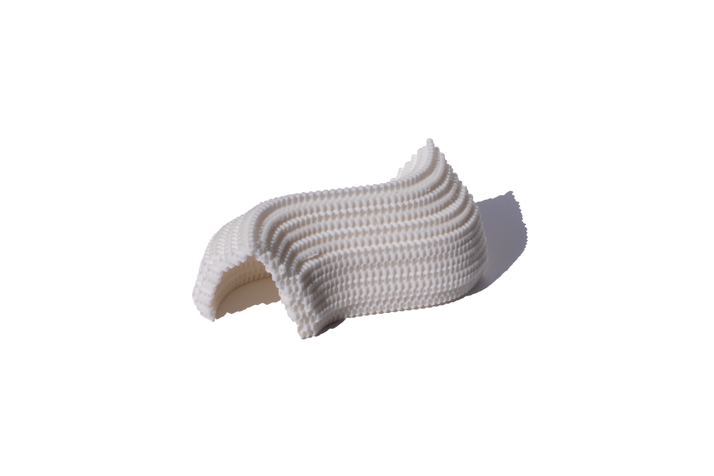
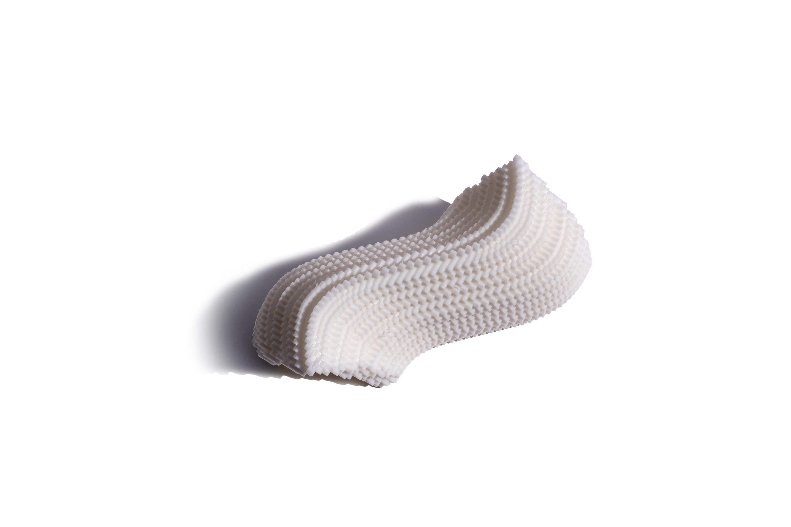
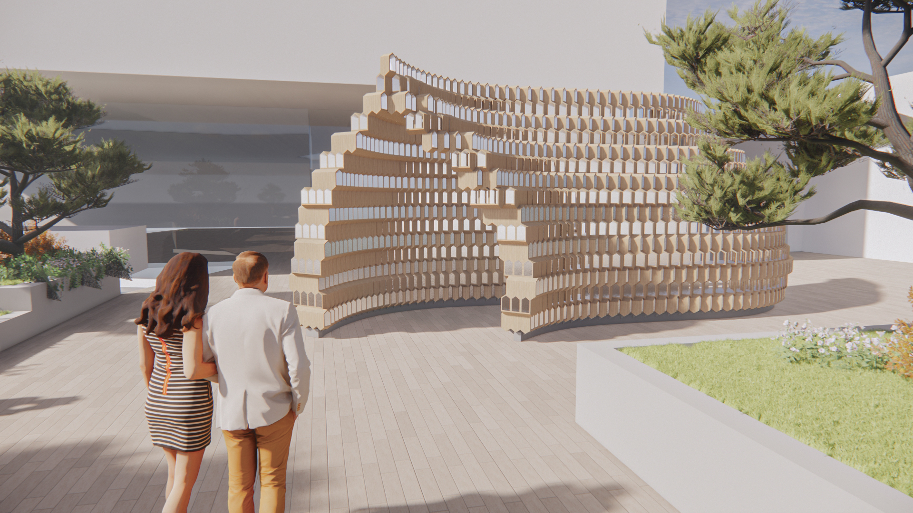
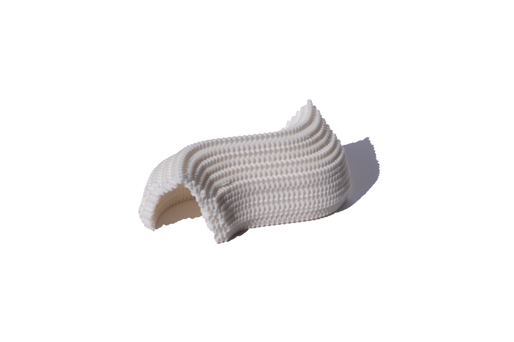
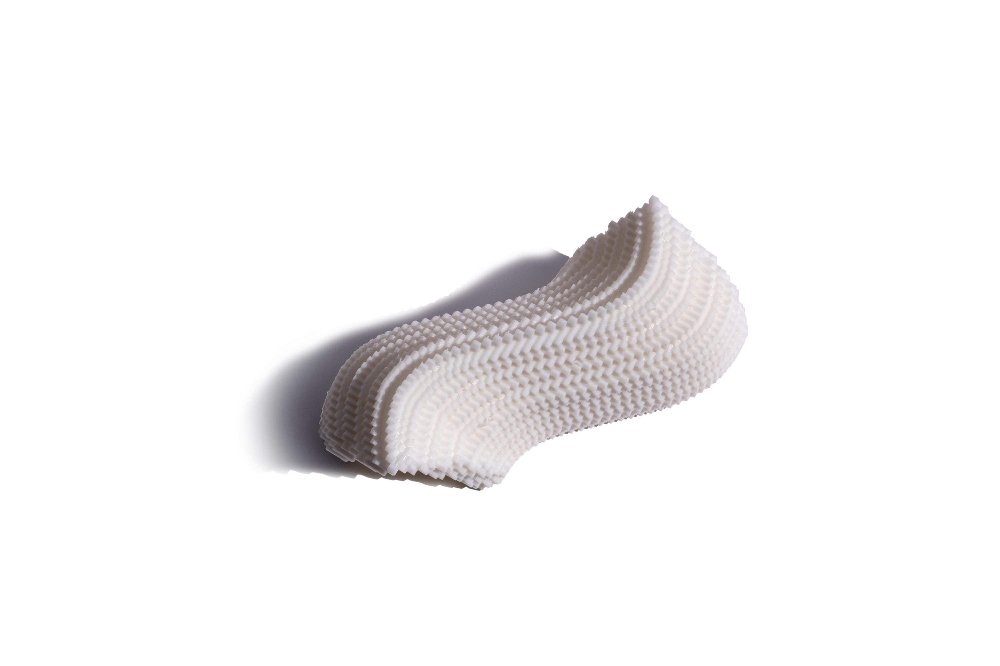
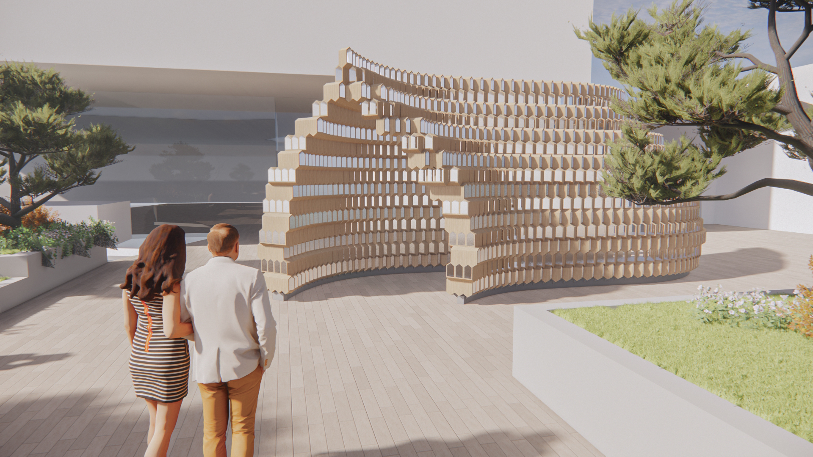

Strobile Pavilion
Location: Sapporo, Japan
Program: Cultural & Pavilion
Year: 2023
Team: John Jiang
The Strobile Pavilion in Sapporo is an innovative architectural installation designed for the city's renowned winter festival. Drawing inspiration from the geometric patterns of pine cones (strobiles), the pavilion creates a dynamic interplay between light, shadow, and ice, celebrating the unique characteristics of Hokkaido's winter landscape.
The structure employs a modular system of interlocking panels that mimic the mathematical precision found in natural strobile formations. This design not only provides structural efficiency but also creates ever-changing patterns as sunlight filters through the pavilion throughout the day, while artificial lighting transforms it into a luminous beacon at night.
As a temporary installation, the pavilion demonstrates sustainable design principles through its use of recyclable materials and minimal site impact. The project serves as both an artistic statement and a functional space for winter festival activities, providing shelter while maintaining a strong connection to its snowy surroundings.
 




